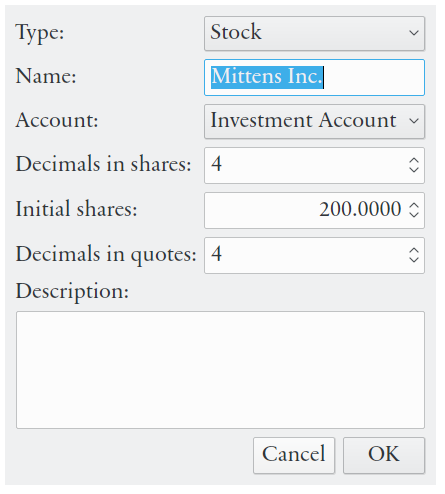
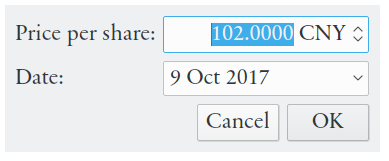
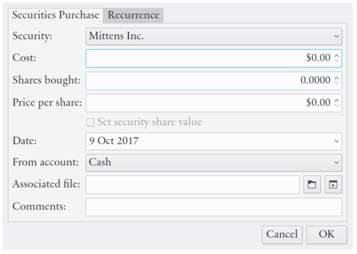
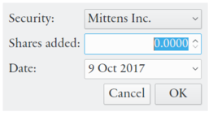
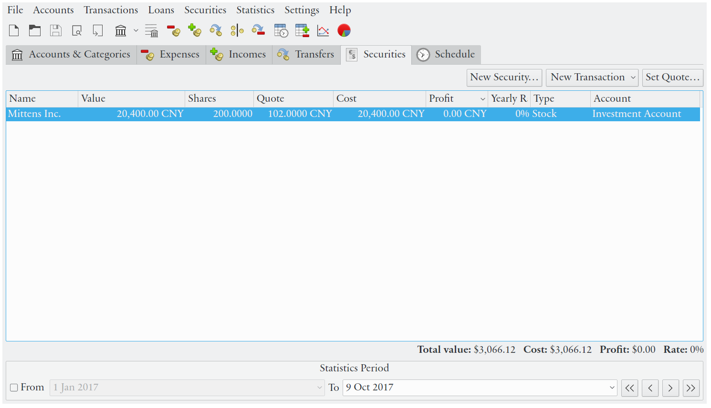

Table of Contents
Securities represents money invested in stock, bonds and mutual funds. Eqonomize! does not differentiate between different kinds of securities, even though the terminology used is better suited for some. Securities and associated statistics are displayed in the securities view.
The create a new security in Eqonomize! use → or the button. First select an account. Securities are associated with an account of securities type, which cannot be associated with ordinary transactions. Enter name of the security and select type. Specify initial shares if you do not want to back-track all transactions (it is always preferred to use transactions instead, for better statistics), and enter a quotation with associated date.
|  |
Automatic updates of stock quotes are not supported. You will have to update the value per share manually (using or in or context menu) for the security value to be up to date.
|  |
The following transactions are supported for securities:
When additional shares of a security have been bought or received (as an income). Specify two of number of shares bought, price per share and total cost (including fees/commission), and select an account (if bought) or income category (if received).
|  |
When some shares of a security have been sold or given away (or used as payment). Specify two of number of shares sold, price per share and total income, and select an account (if sold) or expense category (if given away).
When shares of one security are sold and shares of another security are bought for the same amount of money, without transfer of income to an account in between.
When money is received for each share of a security. Specify income and income category.
When dividend is received as additional shares.
|  |
All shares bought and sold are listed as transfers (listed in the transfers view), unless recieved/given away (in which case the transaction are listed as an income or expense), and dividends as incomes (in the incomes view). You can list all transactions associated with a single security using → (or the context menu).
|  |
Statistics displayed for each security:
Value at period end date date (quotation * shares).
Price per share at period end date.
Shares at period end date.
Total price paid for all buys minus sells, at end date.
Profit during the period (value + dividends - cost).
Percent increase of value per share (for a share bought at the beginning of the period), during the period on a yearly basis. Includes dividends.
In the total statistics displayed below the security list, quotation and yearly rate are weighted based on the value of each security.
Predictions are simplistic and based on previous development, with respect to dividends and quotations, only. Future quotations are calculated using quotations during the nearest past time. The quotation one month from current date is assumed to have increased at the same rate as during the past month (or the date before with a specified quotation). Dividends are always predicted using full past years (they are assumed to occur on a yearly basis).